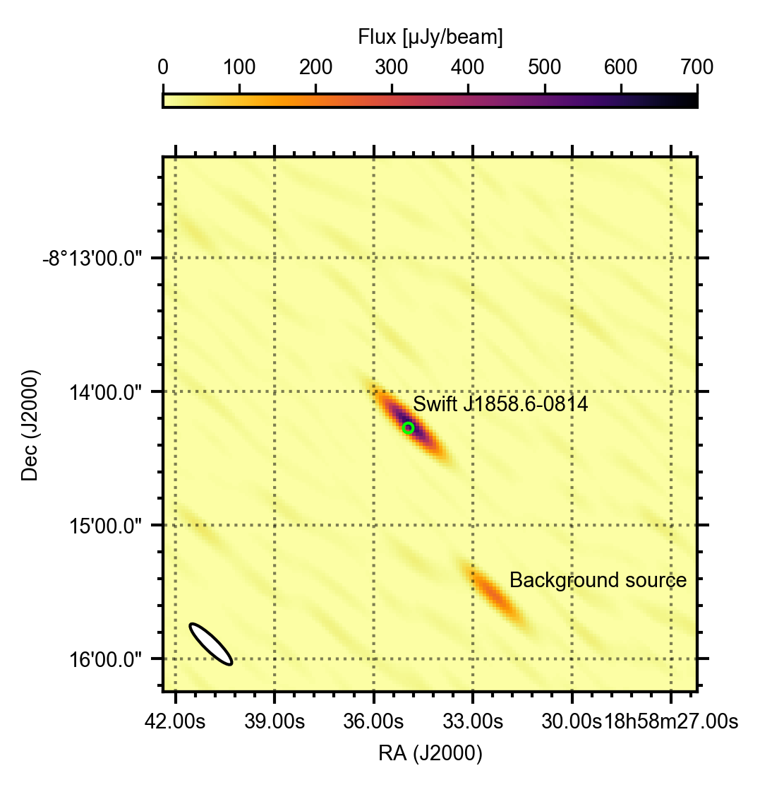
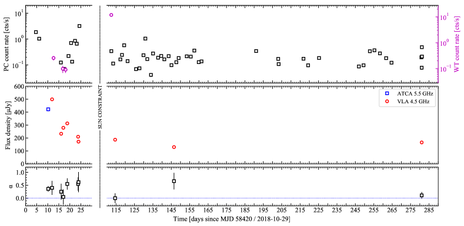
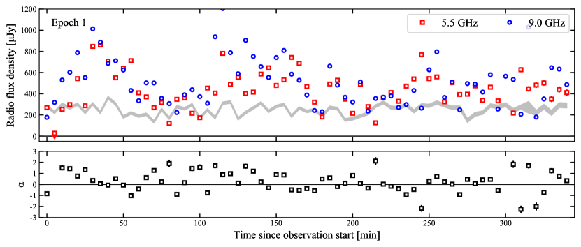
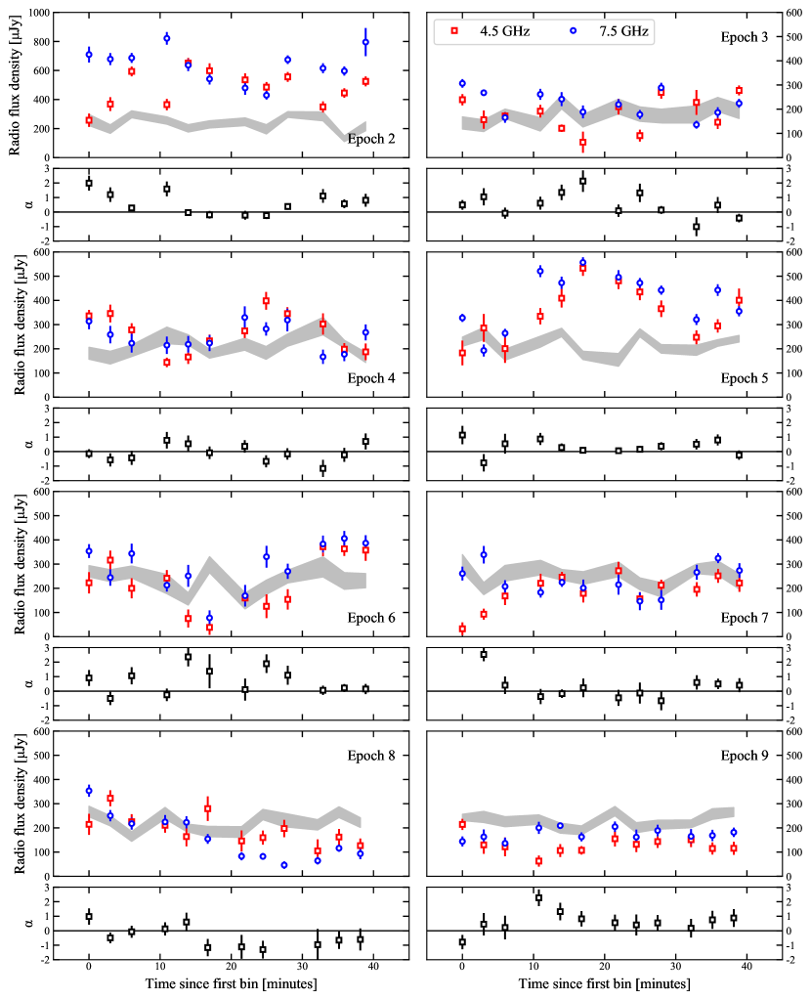
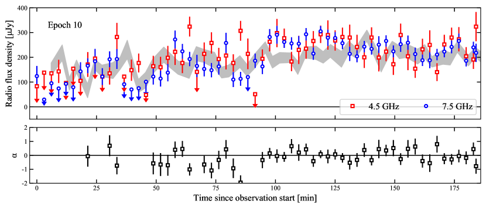
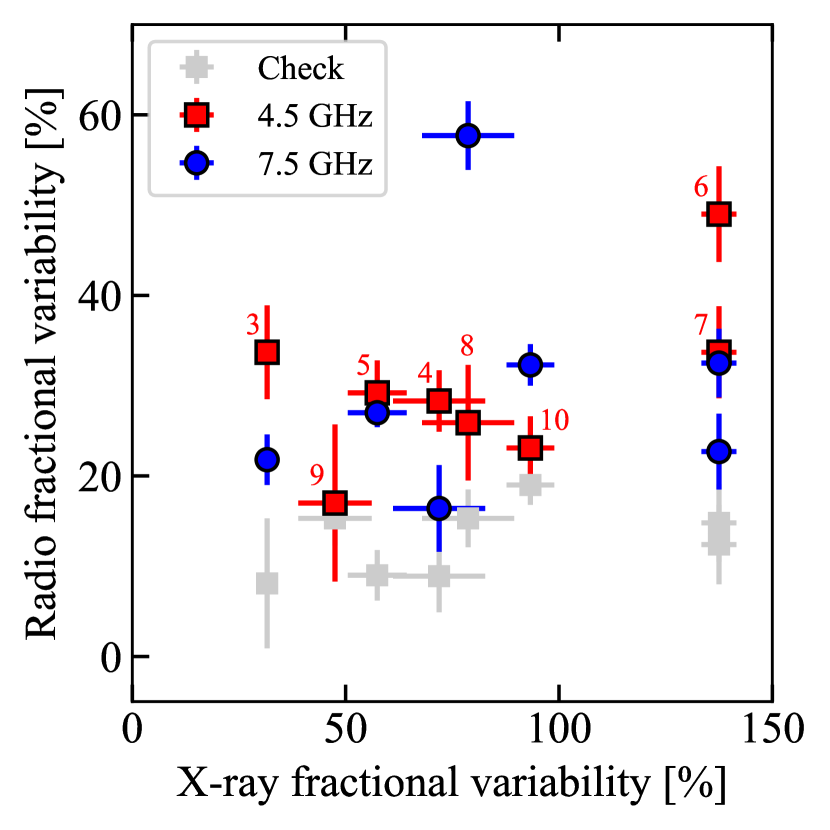
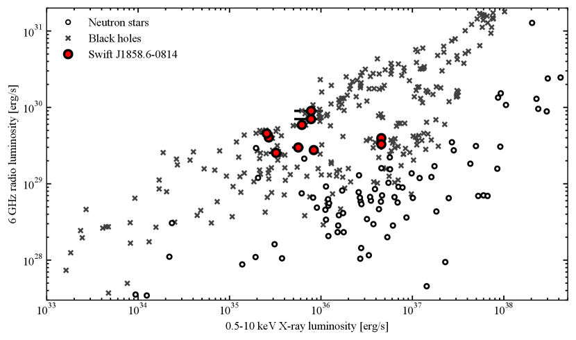
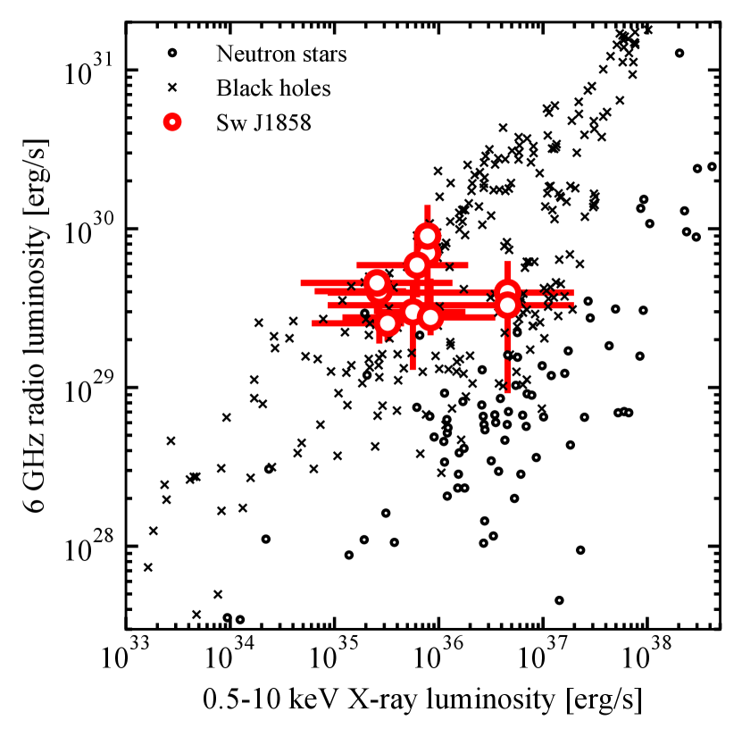

النظير الراديوي المتغير لـ Swift J1858.6-0814
الملخص
Swift J1858.6-0814 ثنائي أشعة سينية عابر يحوي نجماً نيوترونياً، اكتُشف في تشرين الأول/أكتوبر 2018. وقد كشفت أرصاد المتابعة متعددة الأطوال الموجية عبر الطيف الكهرومغناطيسي عن خصائص لافتة، منها توهجات غير منتظمة على مقاييس زمنية بالدقائق، ودلائل على تدفقات رياحية خارجة في الأشعة السينية والأطوال الموجية البصرية معاً، وامتصاص محلي قوي ومتغير، وطيف أشعة سينية صلب على نحو شاذ. نعرض هنا حملة رصد راديوية مفصلة تتكون من رصد واحد عند 5.5/9 غيغاهرتز باستخدام Australia Telescope Compact Array، وتسعة أرصاد عند 4.5/7.5 غيغاهرتز باستخدام Karl G. Jansky Very Large Array. وقد كُشف في جميع الأرصاد نظير راديوي ذو طيف مسطح إلى معكوس، بما يتسق مع إطلاق نفاثة مدمجة من النظام. يُظهر Swift J1858.6-0814 تبايناً كبيراً عند الأطوال الموجية الراديوية في معظم الأرصاد، إذ يتغير بوضوح عند تصويره على مقاييس زمنية من 3 إلى 5 دقيقة، وبما يصل إلى عوامل مقدارها 8 خلال 20 دقيقة. ولا ترتبط فترات الانبعاث الراديوي الأشد سطوعاً بأطياف راديوية شديدة الانحدار، ما يدل على أنها لا تنشأ من إطلاق مقذوفات منفصلة. ونجد كذلك أن من غير المرجح أن يكون للتباين الراديوي أصل هندسي، أو أن يكون ناجماً عن التلألؤ، أو أن يكون مرتبطاً سببياً بالتوهج المرصود في الأشعة السينية. وبدلاً من ذلك، نجد أنه متسق مع تباينات في جريان التراكم تنتشر على امتداد النفاثة المدمجة. ونقارن الخصائص الراديوية لـ Swift J1858.6-0814 بخصائص ثنائيات الأشعة السينية القريبة من حد إدنغتون ذات السمات المتشابهة في الأشعة السينية والبصرية، لكننا لا نجد تطابقاً في التباين الراديوي أو الطيف أو اللمعان.
keywords:
التراكم، أقراص التراكم – النجوم: مصادر منفردة (Swift J1858.6-0814) – الأشعة السينية: الثنائيات – النجوم: النفاثات – المتصل الراديوي: العابرات1 المقدمة
تشكل ثنائيات الأشعة السينية، التي يتراكم فيها جسم مضغوط مادة من نجم مرافق مداري، مختبرات ممتازة لدراسة تراكم المادة وقذفها معاً. وغالباً ما تُصنف هذه الأنظمة بحسب كتلة النجم المانح، إذ تمتلك ثنائيات الأشعة السينية منخفضة الكتلة (LMXBs) عادة نجماً مانحاً كتلته . وبينما يتراكم الجسم المضغوط في بعض هذه الثنائيات من مرافقه على نحو مستمر، فإن غالبية الأنظمة عابرة (انظر الفهارس الحديثة، مثلاً، Corral-Santana et al., 2016; Tetarenko et al., 2016). وتوجد هذه الثنائيات العابرة غالباً في حالة سكون تتخللها فورات تراكمية تمتد عادة من أسابيع إلى أشهر. وخلال هذه الفورات يمكن أن تبلغ LMXBs معدلات تراكم كتلي تقارب حد إدنغتون أو تتجاوزه، مع ازدياد لمعانها في الأشعة السينية بعدة رتب مقدار خلال أيام إلى أسابيع (مثلاً Done et al., 2007).
يمكن لثنائيات الأشعة السينية أيضاً أن تطلق تدفقات خارجة من المادة المتراكمة، تأخذ إما شكل نفاثات نسبية محزّمة أو شكل رياح قرصية أبطأ وأكبر كتلة. وفي فورة نموذجية لثنائي أشعة سينية منخفض الكتلة يحوي ثقباً أسود أو نجماً نيوترونياً، لا تُرصد النفاثة المدمجة ورياح القرص في الوقت نفسه في الراديو والأشعة السينية (مثلاً Fender et al., 2004; Ponti et al., 2012). فبدلاً من ذلك تُطلق النفاثة الراديوية المدمجة في الحالة ”الصلبة”، التي يهيمن عليها انبعاث أشعة سينية غير حراري ومكمتن (Corbel et al., 2000; Dhawan et al., 2000; Stirling et al., 2001)، في حين تُكشف الرياح في الأشعة السينية (إذا سمح الميل؛ Ponti et al., 2013; Higginbottom et al., 2017) في الحالة ”الناعمة” التي يهيمن عليها القرص. وفي الحالة الناعمة تُخمد النفاثة المدمجة في أنظمة الثقوب السوداء (Fender et al., 2004). أما في أنظمة النجوم النيوترونية فتُرصد نفاثات الحالة الناعمة في بعض المصادر، بينما تُخمد في مصادر أخرى (Miller-Jones et al., 2010; Gusinskaia et al., 2017; Díaz Trigo et al., 2018). غير أن الفصل بين النفاثة والرياح يصبح أقل وضوحاً عند تضمين الأطوال الموجية البصرية: فقد رُصدت رياح قرصية في النطاقات البصرية أثناء الحالات الصلبة في LMXBs، كما في الثقوب السوداء العابرة Swift J1357.2-0933 (Jiménez-Ibarra et al., 2019; Charles et al., 2019) وMAXI J1820+070 (Muñoz-Darias et al., 2019).
وتصبح العلاقة بين التدفقات الريحية والنفاثات أكثر تعقيداً عند أعلى معدلات التراكم، أي فوق حد إدنغتون. فعند هذه المعدلات كثيراً ما يُرى نوعا التدفق الخارج معاً (مثلاً Neilsen & Lee, 2009; Homan et al., 2016; Muñoz-Darias et al., 2016; Motta et al., 2017; Allen et al., 2018; van den Eijnden et al., 2019). وكثيراً ما تُظهر الثقوب السوداء المتراكمة فوق إدنغتون توهجات بعدة رتب مقدار على مقاييس زمنية من ثوان إلى دقائق، في نطاقي الأشعة السينية والراديو، حيث يرتبط التباين الراديوي عادة بإطلاق مقذوفات منفصلة متمددة (مثلاً Rupen et al., 2003a, 2004a; Fender et al., 2009; Tetarenko et al., 2017; Miller-Jones et al., 2019). ويمكن استنتاج هذا الأصل على نحو غير مباشر من الأطياف الراديوية شديدة الانحدار، ومن تلطيف التباين مع ازدياد التأخر باتجاه ترددات الرصد الأدنى التي تسبر مناطق أبعد أسفل التدفق الخارج (Tetarenko et al., 2019a). كما يمكن استنتاجه مباشرة بدرجة أكبر عبر حل المقذوفات باستخدام قياس التداخل ذي خط القاعدة الطويل جداً (مثلاً Miller-Jones et al., 2019). ويُرى سلوك مشابه أيضاً في LMXBs ذات النجوم النيوترونية عندما تتراكم قرب حد إدنغتون (Fomalont et al., 2001a, b; Homan et al., 2016; Motta & Fender, 2019).
في تشرين الأول/أكتوبر 2018، أبلغ Krimm et al. (2018) عن اكتشاف عابر مجري جديد في الأشعة السينية بواسطة Burst Alert Telescope (BAT) على متن Neil Gehrels Swift Observatory (Gehrels et al. 2004؛ ويشار إليه فيما يلي باسم Swift). وسرعان ما توبع هذا المصدر الجديد، المسمى Swift J1858.6-0814 (ويشار إليه فيما يلي باسم Sw J1858)، عند أطوال موجية عديدة، واكتُشف أيضاً في الأشعة فوق البنفسجية (Kennea & Krimm, 2018; Bozzo et al., 2018)، والبصري (Vasilopoulos et al., 2018)، والراديو (Bright et al., 2018). وعند طاقات الأشعة السينية، أظهر Sw J1858 طيفاً شديد الصلابة حتى 10 كيلو إلكترون فولت () وفورة خافتة بتدفقات وصلت إلى erg/s/cm2 (Reynolds et al., 2018). وفوق هذا الانبعاث الخافت نسبياً، أظهر Sw J1858 توهجات قوية وقصيرة في الأشعة السينية (Ludlam et al., 2018; Hare et al., 2019)، حيث يمكن أن يزداد التدفق المرصود بأكثر من رتبة مقدار (حتى، مثلاً، erg/s/cm2 في Hare et al., 2020). وقد حُددت مثل هذه التوهجات أيضاً عند الأطوال الموجية البصرية (Vasilopoulos et al., 2018; Baglio et al., 2018; Rajwade et al., 2018, 2019; Paice et al., 2018). إضافة إلى ذلك، أظهر طيف الأشعة السينية دليلاً على امتصاص محلي قوي (Reynolds et al., 2018; Hare et al., 2020)، ورُصدت تدفقات خارجة في الطيف البصري (Muñoz-Darias et al., 2020) واستُدل عليها أيضاً من طيف الأشعة السينية (Buisson et al., قيد التقديم).
كان Sw J1858 نشطاً لأكثر من عام وقت كتابة هذا البحث: فقد دخل الحجب الشمسي بعد ثلاثة أسابيع من أول تقرير عن الفورة، ثم خرج منه بعد ثلاثة أشهر في حالة مشابهة (Rajwade et al., 2019). وظل نشطاً أيضاً بعد فترة حجب شمسي ثانية في 2019–2020، خرج منها في شباط/فبراير 2020 بحالة أشعة سينية أكثر ليونة لم تكن قد رُصدت سابقاً (Buisson et al., 2020a). وكما لاحظ عدة مؤلفين (أي Ludlam et al., 2019; Paice et al., 2018; Reynolds et al., 2018; Hare et al., 2020, Buisson et al., قيد التقديم)، فإن الظواهر الغنية المرصودة في الحالة الأولية لـ Sw J1858 تتداخل مع خصائص LMXBs العابرة ذات الثقوب السوداء V404 Cyg (Rodriguez et al., 2015) وV4641 Sgr (Wijnands & van der Klis, 2000): فالتوهج القوي في البصري والأشعة السينية، والشكل الطيفي للأشعة السينية (مثلاً، Motta et al., 2017)، والدلائل على الرياح البصرية كلها تُرصد في المصادر الثلاثة (Muñoz-Darias et al., 2016, 2018, 2020).
بينما كان Sw J1858 في حالته الجديدة في الأشعة السينية منذ شباط/فبراير 2020، رصد NICER عدة توهجات (غطى NuSTAR أحدها أيضًا) تبيّن، عند فحصها بدقة، أنها انفجارات أشعة سينية من النوع الأول (Buisson et al., 2020b). تنشأ هذه الانفجارات من احتراق نووي حراري جامح للمادة المتراكمة على سطح النجوم النيوترونية (انظر للمراجعات، على سبيل المثال، Lewin et al., 1995; Strohmayer & Bildsten, 2006; Galloway & Keek, 2017). وقد حُددت الانفجارات المرصودة من Sw J1858، من شكلها وطيفها وتطورها الطيفي، على أنها انفجارات من النوع الأول، ومن ثم فهي تُظهر بوضوح أن الجسم المتراكم نجم نيوتروني. وتُظهر إحدى الانفجارات التي أبلغ عنها Buisson et al. (2020b) دليلًا على تمدد نصف القطر الفوتوسفيري، وهو ما يعني مسافة قدرها kpc إلى Sw J1858 (بافتراض أن الانفجار يبلغ لمعان إدنغتون؛ انظر أيضًا Buisson et al. قيد الإعداد). وسنعتمد هذه المسافة في عملنا.
خارج توهجاته وقبل فترة الحجب الشمسي الثانية، بلغت فورة Sw J1858 لمعانات أشعة سينية قدرها (D/15 kpc)2 بالنسبة إلى جسم متراكم هو نجم نيوتروني. ونظراً إلى هذا اللمعان المنخفض في الأشعة السينية، فعّلنا برنامج رصد بالأشعة السينية باستخدام Swift وبالراديو باستخدام Karl G. Jansky Very Large Array (VLA) لدراسة فورات عابرات الأشعة السينية عند لمعانات أشعة سينية منخفضة. واستُكملت هذه الحملة برصد باستخدام Australia Telescope Compare Array (ATCA). ونورد هنا نتائج هذه الدراسة، مع التركيز على خصائص التباين الراديوي وصولاً إلى المقاييس الزمنية بالدقائق. ويعرض هذا البحث الحملة الراديوية بالاقتران مع رصد Swift، بما يضع السلوك الراديوي في سياق الفورة كاملة.
2 الأرصاد وتحليل البيانات
2.1 الراديو
تألفت حملة الرصد الراديوية لـ Sw J1858 من رصد أولي واحد باستخدام ATCA، تلته تسعة أرصاد أُجريت باستخدام VLA. أُخذ رصد ATCA في تشرين الثاني/نوفمبر 8، 2018 بين 04:58:09.9 و11:08:59.9 UTC (رمز المشروع C2601). وكان التلسكوب في تشكيله الممتد 6km (6B)، مع تعطّل الهوائي 3. استخدمنا PKS 1934-638 معايراً أولياً، في حين كان المعاير الثانوي القريب لجميع الأرصاد هو J1832-1035 (بفاصل ). وسُجلت القياسات آنياً عند و غيغاهرتز في نمط المتصل القياسي، وبعرض نطاق قدره 2048 ميغاهرتز لكل نطاق. وسنشير إلى هذا الرصد في هذا البحث باسم الحقبة 1. وترد تفاصيل كل رصد راديوي على حدة، بما في ذلك الأرصاد التي تُناقش أدناه، في الجدول 1.
كانت أرصاد VLA التسعة جزءاً من برنامجي الرصد SE0057 و19A-495. أُجريت الأرصاد الستة الأولى في تشرين الثاني/نوفمبر 2018، قبل أول فترة حجب شمسي في الأشعة السينية. أما الأرصاد الثلاثة الأخيرة فحُصل عليها في شباط/فبراير وآذار/مارس وآب/أغسطس 2019، على الترتيب. استغرق كل من الأرصاد الثمانية الأولى ساعة، بما في ذلك مسوحات الإعداد والمعايرة، وأُخذت في النطاق C باستعمال نمط 8 بت، مع نطاقين فرعيين متمركزين عند و غيغاهرتز وبعرض نطاق قدره ميغاهرتز لكل منهما. وكان للرصد الأخير الإعداد نفسه، لكنه استمر ساعات لتعظيم التداخل الزمني مع مراصد أخرى ضمن حملة رصد منسقة. وبحسب وقت بدء الرصد، استخدمنا إما J0137+3309 (3C 48) أو J1331+3030 (3C 286) معايراً أولياً. واستخدمنا المعاير الثانوي نفسه المستخدم في رصد ATCA. أُخذت الأرصاد في تشكيلات مختلفة، شملت D وDC وC وCB وB وA. وسنشير في هذا البحث إلى هذه الأرصاد التسعة باسم الحقب 2 إلى 10.
لمعايرة الأرصاد الراديوية المتوسطة زمنياً وتصويرها، اتبعنا الإجراءات القياسية باستخدام الإصدار Common Astronomy Software Application (casa; McMullin et al., 2007) 4.7.2. استخدمنا مزيجاً من خوارزميات الوسم الآلي وفحصاً يدوياً دقيقاً للرؤى لإزالة التداخل الراديوي RFI، ثم صورنا Stokes I باستعمال مهمة casa متعددة المقاييس ومتعددة الترددات clean. ولتعظيم الحساسية مع تقليل آثار الفصوص الجانبية لمصدر خلفية قريب، استخدمنا مخطط ترجيح Briggs مع ضبط معامل robust على . وقد كُشف المصدر بدلالة معنوية في كل حقبة وفي كلا النطاقين، وقسنا كثافات التدفق بملاءمة المصدر النقطي بنموذج غاوسي إهليلجي له حجم حزمة الاستعادة وشكلها في مستوى الصورة، وذلك باستخدام imfit. وحُدد لايقين 1 في كثافة التدفق من قيمة الجذر التربيعي لمتوسط المربعات في منطقة قريبة خالية من المصادر.
نظرًا للتباين القوي في الأشعة السينية والضوء البصري لدى Sw J1858، حللنا الأرصاد الراديوية أيضًا على مقاييس زمنية أقصر لاستكشاف التباين داخل الرصد الواحد. وبسبب اختلاف تغطية مستوى u-v الآنية، اتبعنا نهجين مختلفين في رصدَي ATCA وVLA. فبالاستفادة من تغطية مستوى u-v الآنية الجيدة في VLA، استخدمنا نهجًا في مستوى الصورة: إذ صوّرنا، باستخدام برنامج python مخصص وفحوصات يدوية للمخرجات، نطاقَي الرصد ( و غيغاهرتز) على مقياس زمني قدره دقائق لقياس منحنى ضوء المصدر. أما في ATCA، فإن الاتجاه شرق-غرب يجعل تحليل مستوى الصورة على مقاييس زمنية بالدقائق، وعند مستويات كثافة التدفق الخاصة بـ Sw J1858، غير عملي. لذلك استخدمنا بدلًا من ذلك الملاءمة في مستوى u-v بمهمة uvmultifit (Martí-Vidal et al., 2014)، بدقة زمنية قدرها دقائق. جرّبنا، لكل من VLA وATCA، عدة دقات زمنية وفحصنا النتائج لاختيار المقياس الزمني الذي يوازن على أفضل وجه بين الحساسية والقدرة على رصد تغيرات قصيرة المدى. واستقررنا على دقة زمنية أقل قليلًا في ATCA، نظرًا إلى حساسية VLA الأعلى. حُسبت أخطاء منحنيات الضوء بالطريقة نفسها المستخدمة لكثافة التدفق المتوسطة في تحليل مستوى الصورة، وباستخدام خطأ الملاءمة الإحصائي في تحليل مستوى u-v. ولتقييم مدى كون أي تباين مرصود خاصًا بالهدف، لا ناتجًا عن تأثيرات جوية أو آلية، حللنا أيضًا مصدرًا خلفيًا قريبًا على المقياس الزمني نفسه لكل من VLA وATCA.
أخيرًا، بالنسبة لكل من الأرصاد الكاملة والمحددة زمنيًا، قمنا بحساب الدليل الطيفي الراديوي (حيث ). قمنا بتقدير الخطأ على باستخدام محاكاة مونت كارلو، حيث قمنا برسم كثافات التدفق بشكل عشوائي في كل من ترددات الرصد وأعدنا حساب إجمالاً مرة. تم بعد ذلك حساب عدم اليقين على الدليل الطيفي باعتباره الانحراف المعياري للتوزيع الناتج للمؤشرات الطيفية.
كان معاير VLA الأولي 3C 48، المستخدم في أربع حقب (انظر الجدول 1)، يمر بسلوك توهجي منذ كانون الثاني/يناير 201811 1 https://science.nrao.edu/facilities/vla/docs/manuals/oss/performance/fdscale، وهو ما يمكن أن يؤثر في مقياس التدفق على مستوى %. وللتحقق مما إذا كان ذلك يؤثر في أرصادنا، فحصنا سجلات خرج مهمة casa fluxscale، وقارنا كثافة التدفق المعايرة للمعاير الثانوي بين الحقب التسع. وبينما تُظهر قاعدة بيانات معايري ATCA22 2 https://www.narrabri.atnf.csiro.au/calibrators/ أن J1832-1035 يبقى ذا كثافة تدفق مستقرة نسبياً عند غيغاهرتز مع الزمن، فقد قسنا انخفاضاً طفيفاً في كثافة التدفق خلال الحقبتين 3 و4: Jy، مقارنة بـ – Jy في الحقب المتبقية، بغض النظر عن المعاير الأولي. لذلك قد تكون كثافات التدفق المتوسطة المقيسة في هاتين الحقبتين منخفضة تقديرياً بمقدار –%. غير أن ذلك لا يؤثر في التحليل المحلول زمنياً داخل الأرصاد الذي نقدمه في هذا البحث.
2.2 الأشعة السينية
أجرت Swift حملة رصد واسعة في الأشعة السينية لـ Sw J1858 ضمن ObsIDs و و. وأُخذت الأرصاد في نمطي عد الفوتونات (PC) والتوقيت النافذي (WT). وقبل 22 تشرين الثاني/نوفمبر 2018، عندما دخل الهدف في الحجب الشمسي، أُجري 13 رصداً بتلسكوب الأشعة السينية (XRT) بتعريضات وصلت إلى ks. ثم استؤنف الرصد في 19 شباط/فبراير 2019، إذ كان المصدر لا يزال يتراكم بنشاط عند خروجه من الحجب الشمسي، واستمر ذلك حتى أوائل آب/أغسطس 2019. وبما أننا نركز على الخصائص الراديوية والتباين في Sw J1858، فإننا لا نجري تحليلاً مفصلاً للأشعة السينية لكل أرصاد Swift، بل نركز على قياس تدفق الأشعة السينية حول أزمنة الأرصاد الراديوية. ولتحليل أكثر تفصيلاً لطيف الأشعة السينية في Sw J1858، نحيل القارئ إلى Hare et al. (2020) وBuisson et al. (قيد التقديم).
نظرًا لضعف المصدر، فإننا لا نستخدم البيانات من أرصاد Swift-BAT أو Monitor of All-sky X-ray Image (MAXI) في هذا العمل. بدلاً من ذلك، نستخدم بيانات الرصد المتوفرة Swift/XRT لاستخراج منحنى ضوء الأشعة السينية طويل المدى للمصدر، من أجل وضع أرصادنا الراديوية في سياق الفورة الكامل. بالإضافة إلى ذلك، قمنا باستخراج وملاءمة أطياف الأرصاد المأخوذة الأقرب إلى حقبنا الراديوية، من أجل قياس تدفق الأشعة السينية شبه المتزامن. لكل Swift رصد أُخذها بالقرب من أرصاد راديوية، فإننا نأخذ في الاعتبار أيضًا منحنى ضوئي بدقة ثانية لتقدير مقدار تباين الأشعة السينية في ذلك الوقت. جميع بيانات الأشعة السينية التي تم تحليلها مدرجة في الجدول 1.
كان رصد Swift/XRT الوحيد الواقع خلال أربعة أيام من رصد ATCA وأول رصد VLA (أي الحقبتين 1 و2) قصيراً جداً، فلم تتجاوز مدته ثانية. لذلك حوّلنا في ذلك الرصد معدل عد الأشعة السينية إلى تدفق، بافتراض شكل طيف أشعة سينية نموذجي لـ Sw J1858 في بقية الفورة (انظر القسم 3.3). أما الحقب 3 إلى 7، وقد أُجريت كلها قبل الحجب الشمسي حين كانت Swift ترصد يومياً تقريباً، فقد استُخدمت لها أطياف أشعة سينية أُخذت خلال ساعة من الرصد الراديوي. وبالنسبة للحقبتين 8 و9، اللتين أُجريتا بعد الحجب الشمسي الأول، كان رصد Swift أقل كثافة؛ لذلك تفصل عادة بين الأرصاد الراديوية وأرصاد الأشعة السينية في هذه الأزمنة المتأخرة مدة – يوم. وأخيراً، أُخذت ثلاثة أرصاد متتالية من Swift بالتزامن مع الحقبة العاشرة والأخيرة.
حصلنا على أطياف Swift/XRT، مع أطياف الخلفية وملفات الاستجابة المقابلة، وعلى منحنيات الضوء الطويلة الأمد ومنحنيات الأرصاد المنفردة، باستخدام مولد منتجات البيانات على الإنترنت33 3 http://www.swift.ac.uk/user_objects/ (Evans et al. 2007، 2009). ولائمنا أطياف الأشعة السينية باستخدام xspec v.12.10.1، مع اعتماد وفرات Wilms et al. (2000) والمقاطع العرضية لـ Verner et al. (1996). وأخذنا الامتصاص بين النجمي في الحسبان باستعمال نموذج tbabs. ونظراً لانخفاض معدلات العد وقصر الأرصاد، استخدمنا إحصائية W إحصائيةً للملاءمة (Cash, 1979). وحُسبت التدفقات وأخطاؤها باستعمال نموذج الالتفاف cflux. وتُذكر كل الأخطاء عند مستوى ، ما لم يُنص على خلاف ذلك.
3 النتائج
| Epoch | Observatory | Radio MJD | Primary calibrator | Config. | Swift ObsID | XRT mode | Swift MJD | XRT Exposure [s] |
|---|---|---|---|---|---|---|---|---|
| 1 | ATCA | 58430.207 | PKS 1934-638 | 6B | 00010955003 | WT | 58432.619 | 30 |
| 2 | VLA | 58431.954 | J0137+3309 (3C 48) | D | ||||
| 3 | VLA | 58436.072 | J0137+3309 (3C 48)* | DC | 00010955004 | WT | 58436.478 | 1870 |
| 4 | VLA | 58437.060 | J0137+3309 (3C 48)* | DC | 00010970002 | PC | 58437.465 | 2035 |
| 5 | VLA | 58438.835 | J1331+3030 (3C 286) | DC | 00010970003 | PC | 58439.390 | 1630 |
| 6 | VLA | 58443.748 | J1331+3030 (3C 286) | C | 00010955008 | PC | 58444.304 | 1960 |
| 7 | VLA | 58443.922 | J0137+3309 (3C 48) | C | 00010955008 | PC | 58444.304 | 1960 |
| 8 | VLA | 58534.498 | J1331+3030 (3C 286) | CB | 00010970008 | PC | 58537.342 | 995 |
| 9 | VLA | 58566.479 | J1331+3030 (3C 286) | B | 00010970023/24 | PC | 58565.104/58567.754 | 995/945 |
| 10 | VLA | 58701.035 | J1331+3030 (3C 286) | A | 00010970043/44/45 | PC | 58701.032 | 2200 |
| Epoch | Radio flux density [Jy] | Radio spectral index | – keV X-ray flux | (dof) | ||
|---|---|---|---|---|---|---|
| Low band | High band | [erg/s/cm2] | ||||
| 1 | N/A (see Section 3.3) | |||||
| 2 | ||||||
| 3* | 250.6 (265) | |||||
| 4* | 127.5 (106) | |||||
| 5 | 181.8 (221) | |||||
| 6 | 451.3 (507) | |||||
| 7 | 451.3 (507) | |||||
| 8 | 112.7 (108) | |||||
| 9 | 98.1 (91) | |||||
| 10 | 256.4 (285) | |||||
3.1 كشف الراديو وتحديد موضعه
كُشف Sw J1858 بدلالة معنوية عند كلا ترددي الرصد الراديويين في كل رصد. وفي الشكل 1 نعرض الكشف الراديوي عن Sw J1858 خلال الحقبة الثانية عند غيغاهرتز (المرصودة باستخدام VLA)، حين كان المصدر في أسطع حالاته راديوياً. وتُظهر الصورة نظيراً راديوياً متوافقاً مع مصدر Swift/XRT. ويظهر أيضاً مصدر راديوي ثان قريب على بعد ، وقد يسهم في الضجيج البنيوي الذي أبلغ عنه AMI-LA (Bright et al., 2018). وقد قيس أفضل موضع راديوي ملائم من الحقبة العاشرة والأخيرة (7.5 GHz):
RA h m s s
Dec ’ ”
حيث استُنتج الخطأ من الدقة الفلكية النموذجية لـ VLA (% من الحزمة المركبة). ويتفق هذا الموضع تماماً مع موضع Swift/XRT الذي أبلغ عنه Kennea & Krimm (2018). استخدمنا الحقبة الأخيرة لهذا الحساب لأن التشكيل A الممتد في ذلك الرصد يعطي أصغر لايقين إحصائي. وعلى الرغم من أن الهدف كان خافتاً نسبياً أثناء هذا الرصد، فإن نسبة الإشارة إلى الضجيج العالية () ظلت كافية لجعل دقة الموضع محدودة بـ من حجم الحزمة.

3.2 منحنيات الضوء طويلة المدى







في الشكل 2 نعرض منحنيات الضوء طويلة الأمد في الأشعة السينية والراديو، والدليل الطيفي الراديوي بدلالة الزمن. وبين و يوماً بعد اكتشاف الفورة بواسطة BAT، كان Sw J1858 واقعاً في حجب شمسي بالنسبة إلى Swift. ويكشف منحنى معدل العد في الأشعة السينية (في اللوحة العليا) عن تغيرات قوية بين الأرصاد، تتجاوز رتبتين من حيث المقدار. ومع ذلك، لا يظهر شكل فورة واضح ذو صعود واضمحلال متميزين. ويتأثر التباين الظاهري بين الأرصاد بوجود توهجات أشعة سينية في Sw J1858، إذ تعزز هذه التوهجات، مع قصر تعريضات Swift، معدل العد في الأرصاد التي تغطي توهجاً واحداً أو أكثر. وبعد اليوم يتناقص المجال الديناميكي بين الأرصاد، وتقع كل معدلات العد ضمن رتبة مقدار واحدة. وفي وقت كتابة هذا البحث لا يزال Sw J1858 نشطاً، لمدة أطول بكثير، على سبيل المثال، من فورة 2015 في V404 Cyg التي قورن بها في وقت مبكر من فورته (Ludlam et al., 2018; Paice et al., 2018; Reynolds et al., 2018)
يُظهر منحنى ضوء الراديو، الموضح في اللوحة الوسطى، ذروة أولية تضمحل بمرور الوقت. ومع ذلك، مرة أخرى، لا يتحلل المصدر بشكل رتيب في كثافة التدفق الراديوي. تصبح العينات الراديوية متفرقة بعد فترة حجب الشمس، لكن Sw J1858 لا تتحلل أبدًا إلى ما دون Jy في أرصادنا. جميع كثافات التدفق الراديوي المرسومة، في كلا ترددي الرصد، مدرجة في الجدول 2 أيضًا. وأخيرًا، نعرض الدليل الطيفي الراديوي كدالة للزمن. في جميع الأرصاد، يكون الدليل الطيفي إما متسقًا مع الصفر أو موجبًا، مما يعني وجود طيف مسطح أو معكوس، على التوالي. يتوافق هذا الشكل الطيفي الراديوي في نظام ثنائي للأشعة السينية مع وجود نفاثة مدمجة وثابتة (مثلاً Blandford & Königl, 1979; Corbel et al., 2004; Fender et al., 2004; Kalemci et al., 2005; Russell et al., 2014). يبدو أنه لا يوجد تطور منهجي للمؤشر الطيفي مع اضمحلال السطوع الراديوي.
3.3 قياسات تدفق الأشعة السينية
إلى جانب كثافات التدفق الراديوية والشكل الطيفي، نورد في الجدول 2 أيضاً تدفقات الأشعة السينية المقيسة ومعلمات الملاءمة الطيفية. ولقياس التدفقات المرصودة، لائمنا كل طيف بنموذج ظواهري بسيط لقانون القوة، tbabs*po. وبعد ملاءمة كل الأطياف معاً لقياس عمود الامتصاص ، وجدنا أن البيانات – عند استخدام هذا النموذج – لا تتطلب إدراج الامتصاص بين النجمي. لذلك ثبتنا عند الصفر في ملاءمات الأطياف المنفردة. ونؤكد أن هذه القيمة لا تعني انعدام كثافة العمود باتجاه الهدف؛ بل تنتج من نموذجنا غير الفيزيائي. وبالفعل، فإن دلائل قانون القوة المقيسة صلبة جداً ()، وذلك أيضاً نتيجة لهذا النموذج.
وعند النظر في نماذج طيفية أكثر تعقيداً، بيّن Reynolds et al. (2018) أن رصد Swift 00010955004 (المستخدم في الحقبة 3) يمكن ملاءمته على نحو أفضل بنموذج امتصاص محلي معقد، شبيه بما يُرى في V404 Cyg وV4641 Sgr (Motta et al., 2017; Morningstar et al., 2014). غير أن نهج قانون القوة البسيط الذي نستخدمه يمكن تطبيقه أيضاً على الأطياف الأقل تدفقاً؛ ففي تلك الأطياف يعيد نموذج الامتصاص المحلي ترابطات كبيرة بين المعلمات، لأن الأطياف تصبح مفرطة الملاءمة. وعلاوة على ذلك، وكما نناقش في القسم 4.1، لا يوجد فرق منهجي بين قياسات التدفق المستخرجة من النموذجين في الأرصاد التي يمكن تطبيق كليهما عليها. وبما أن هدفنا هو تحديد التدفق المرصود، وأننا نناقش آثار الامتصاص المحلي غالباً مناقشة نوعية في القسم 4.4، فقد اخترنا استخدام نموذج قانون القوة في تحليل جميع أطياف الأشعة السينية.
تبرز مجموعتان من الأرصاد، هما الحقبتان الراديويتين 1 و 2 (وهما الأقرب إلى الرصد Swift الأول)، والحقبة 9. أولاً، بالنسبة للحقبتين 1 و 2، فإن أقرب طيف Swift/XRT مدته 30 ثانية فقط. لذلك، بدلاً من تركيب الطيف، قمنا بتحويل معدل العد لوضع WT المقاس إلى تدفق. لهذا الغرض، قمنا بقياس مؤشر قانون الطاقة في رصد الأشعة السينية السابقة واللاحقة ( و، على التوالي). قمنا بعد ذلك باختيار القيم الأكثر تطرفًا ضمن نطاقات الخطأ واستخدمنا webpimms لتحويل معدل العد إلى الحد الأدنى والحد الأقصى للتدفق. نختار متوسط تلك التدفقات على أنه التدفق المقاس ونشير إلى النطاق باعتباره الخطأ المنهجي في الجدول 2. وأخيرًا، قمنا أيضًا بتضمين خطأ بواسون في معدل العد. ثانيًا، كانت الحقبة الراديوية التاسعة محاطة برصدين Swift/XRT مع نفس الفارق الزمني تقريبًا البالغ يومًا. ولذلك، قمنا بتركيب كل من الأطياف والتدفقات المقاسة لكلا الرصدين. ونقيس تدفقات متسقة في هذين الرصدين؛ في ما تبقى من هذا العمل، نعتمد قيمة رصد الأشعة السينية التي أُخذها بعد الحقبة الراديوية (ObsID 0001097024، مع تجاهل ObsID 0001097023).
3.4 التباين على مقياس زمني قصير
نظراً إلى سلوك التوهج في Sw J1858 في نطاقي الأشعة السينية والبصري، سعينا إلى اختبار ما إذا كان تباين شديد مماثل يظهر عند الترددات الراديوية. لذلك صوّرنا النظير الراديوي عند كلا ترددي الرصد على مقياس زمني قدره 5/3 دقيقة (ATCA/VLA). وقد أتاح لنا الحل الزمني على هذا المقياس دراسة التغيرات السريعة في كل من التدفق والدليل الطيفي، من دون أن تحجب اللايقينيات المتزايدة أي تباين. ونعرض في الأشكال 3 و4 و5 منحنيات الضوء الناتجة لكل حقبة. ثم حسبنا الدليل الطيفي في كل حاوية زمنية، كما هو مبين أيضاً في الأشكال 3 و4 و5. وتُظهر منحنيات VLA الضوئية، باللون الرمادي، نطاقات لكثافة تدفق مصدر الخلفية القريب. وتبين هذه النطاقات مدى تأثر تحليل مستوى الصورة بتأثيرات جوية أو آلية، وهي تتغير عادة عند مستوى لايقينيات كثافات تدفق الهدف أو أعلى منها قليلاً.
يُظهر منحنى ATCA الضوئي في الشكل 3 هدفاً شديد التباين عند كلا ترددي الرصد خلال زمن رصد قدره ساعة. ففي بداية الرصد يُرى توهج يصعد ويضمحل على مقياس زمني بعشرات الدقائق. وخلال صعود هذا التوهج واضمحلاله يتناقص الدليل الطيفي تدريجياً من قيمة معكوسة () إلى قيمة مسطحة (). وتمتد كثافات التدفق عبر الرصد على مجال ديناميكي يزيد على أربعة، إذ تتغير من أقل من Jy إلى أكثر من Jy على مقياس زمني بعشرات الدقائق. ونؤكد أننا لا نرسم إلا الخطأ الإحصائي في كثافة التدفق، كما حُدد من ملاءمة المصدر النقطي في مستوى u-v، وهو من رتبة RMS في مستوى الصورة للرصد المتوسط (أي Jy). لذلك تكون اللايقينيات غالباً أصغر من العلامات. ونعرض أيضاً منحنى الضوء لمصدر الخلفية، الذي يعطي مؤشراً على اللايقينيات المنهجية في قياسات كثافة التدفق، بافتراض أنه ثابت جوهرياً.
وبالانتقال إلى منحنيات VLA الضوئية في الشكل 4، نلاحظ في معظم الحقب تبايناً جوهرياً مهماً مقارنة بمصدر الخلفية، عند أحد الترددين الراديويين أو كليهما. فمثلاً تُظهر الحقبة 4 تتابعاً من الاضمحلال ثم الصعود ثم الاضمحلال ضمن رصد واحد مدته دقيقة. ونرى أيضاً توهجاً راديوياً واضحاً في الحقبة 5، إذ يرتفع من إلى Jy في أقل من 15 دقيقة، ثم يضمحل خلال نحو 20 دقيقة. وتُظهر الحقبة 8 اضمحلالاً قوياً عند 7.5 غيغاهرتز، من Jy إلى Jy في أقل من دقائق. أما التباين في الحقب الأخرى فيبدو أكثر اضطراباً وذا طبيعة عشوائية ظاهرياً. ولا نرصد أي توهجات قوية على مقياس دقائق، أي ضمن حاوية زمنية واحدة. وبسبب اعتماد نهج مستوى الصورة في أرصاد VLA هذه، فإن لايقينيات القياسات الفردية أكبر بكثير من نظيراتها في حقبة ATCA.
يوفر رصد VLA النهائي (الحقبة 10؛ الشكل 5)، بفضل زمنه الكلي الطويل، رؤية مكملة للحقب 2 إلى 9: ففي هذا الرصد لم يُكشف المصدر بدلالة معنوية في كل حاوية زمنية مقدارها دقائق. ولا سيما قرب بداية الرصد، كانت كثافات تدفق Sw J1858 تدور حول ثلاثة أضعاف حساسية RMS النموذجية على المقاييس القصيرة. لذلك لا نحسب الدليل الطيفي إلا في الحاويات الزمنية التي يُكشف فيها المصدر بدلالة معنوية عند كل من و غيغاهرتز. وخلال النصف الثاني من الرصد يبلغ Sw J1858 مستوى ثابتاً فوق عتبة الكشف، بدليل طيفي مسطح نسبياً. وعند تلك المرحلة لا يبدو أكثر تبايناً بدلالة معنوية من مصدر الخلفية. وتُظهر هذه النتائج أن سلوك Sw J1858 في الأرصاد ذات الدقائق 40 خلال الحقب 2–9 ليس بالضرورة مستقراً، بل يمكن أن يتغير بسرعة كبيرة.
لتقييم مستوى التباين الراديوي ودلالته، حسبنا التباين الجزئي لمنحنيات ضوء Sw J1858 عند كلا الترددين، وكذلك لمصدر الخلفية، وفق الوصف في Vaughan et al. (2003). ويُعرّف التباين الجزئي لمنحنى ضوء بأنه ، حيث يمثّل تباين منحنى الضوء ويمثّل متوسط مربع الخطأ في معدل العد. وترد القيم المحسوبة لـ في الجدول 3. وباستثناء الحقب 1 و8 و10، نرصد تبايناً أقوى عند التردد الأدنى. وفي معظم حقب VLA يتجاوز التباين الجزئي المرصود أيضاً تباين مصدر الخلفية، ما يدل على أن Sw J1858 كان متغيراً جوهرياً. ويحدث ذلك عند كلا الترددين في الحقبتين 3 و5–8، أما في الحقب 4 و9 و10 فيتجاوز مصدر الخلفية بدلالة معنوية عند تردد واحد فقط. ولا تظهر إلا في الحقبة 2 مستويات تباين متسقة بين Sw J1858 ومصدر الخلفية. ونلاحظ أنه في الحقبة 9 تعذر حساب عند غيغاهرتز، لأن التغيرات المرصودة في كثافة التدفق كانت أصغر من متوسط خطأ البيانات ( في ترميز Vaughan et al., 2003). وأخيراً، تعود اللايقينيات الأصغر بكثير في قياسات للحقبة 1 إلى استخدام اللايقين الإحصائي فقط في ملاءمة مستوى u-v.
في الأشكال 3 و4 و5 نعرض أيضاً الدليل الطيفي الراديوي بدلالة الزمن. ولا نرصد أي توهجات راديوية رقيقة بصرياً، أي ، تكون مرتبطة بإطلاق مقذوفات منفردة. ففي التوهج المرصود في بداية الحقبة 1، مثلاً، يكون الطيف مسطحاً إلى معكوس، بينما يكون الطيف، خلال التوهج المرصود في الحقبة 5، مقيداً جيداً حول قيمة مسطحة. وباستثناء تناقص الدليل الطيفي أثناء توهج الحقبة 1، لا نرصد عموماً تطوراً منظماً كبيراً في الشكل الطيفي بدلالة الزمن، كما قد ينتج مثلاً عن تأخر زمني بين نطاقي الرصد. وبالمثل لا نجد دليلاً على علاقة بين التدفق الراديوي والشكل الطيفي. وأخيراً، نرصد في عدة حقب، ولا سيما 2 و7 و8، أطيافاً راديوية معكوسة بقوة ()، تصبح أكثر تسطحاً مع ارتفاع تدفق غيغاهرتز نحو تدفق غيغاهرتز.
نبحث عن تأخير زمني بين منحنيات الضوء و غيغاهرتز باستخدام الطريقة الموضحة في القسم 3.4 من Buisson et al. (2017). ولإزالة التطور الطويل الأمد أثناء الفورة، طرحنا متوسط التدفق لكل رصد ولكل نطاق ترددي. ويبلغ التأخر الزمني المقيس بين منحنيات VLA الضوئية للحملة الكاملة ثانية، مع ذكر لايقين -سيغما، وتشير القيم الموجبة إلى أن نطاق غيغاهرتز يتأخر عن نطاق غيغاهرتز. ومن ثم فإن الأرصاد متسقة مع عدم وجود تأخر زمني بين الترددين.
أخيراً، وبما أن تبايناً قوياً يُرصد أيضاً في الأشعة السينية، اختبرنا ما إذا كان يمكن ربط مستويات التباين في الأشعة السينية والراديو في Sw J1858. ولهذا الغرض استخرجنا منحنيات ضوء بدقة زمنية قدرها ثانية في مجال – keV لكل أرصاد Swift المدرجة في الجدول 1، باستثناء الرصد الذي لم تتجاوز مدته 30 ثانية، وهو 00010955003؛ وهذا يعني أننا لا ندرج الحقبتين 1 و2 في هذه المقارنة. ثم حسبنا التباين الجزئي في الأشعة السينية وقارناه بالتباين الراديوي في الشكل 6. وتبيّن هذه المقارنة عدم وجود علاقة واضحة بين التباين الجزئي في الأشعة السينية والتباين عند أي من ترددي الرصد الراديويين. ونلاحظ أن أرصاد الأشعة السينية والراديو لم تكن متزامنة تماماً، بل كانت أقرب الأرصاد المتاحة زمنياً، وأن الرصد الأخير (الحقبة 10) يبين أن التباين الراديوي يمكن أن يتغير حتى بين مقطعين متتاليين مدة كل منهما دقيقة.
| Inferred GHz radio flux densities [Jy] | Fractional radio variability | Swift/XRT count rates [cts s-1] | |||||||||
|---|---|---|---|---|---|---|---|---|---|---|---|
| Epoch | Average | Minimum | Maximum | low-band | high-band | background | Average | Minimum | Maximum | ||
| 1 | – | – | |||||||||
| 2 | % | % | % | – | – | ||||||
| 3 | % | % | % | ||||||||
| 4 | % | % | % | ||||||||
| 5 | % | % | % | ||||||||
| 6 | % | % | % | ||||||||
| 7 | % | % | % | ||||||||
| 8 | % | % | % | ||||||||
| 9 | % | – | % | ||||||||
| 10 | % | % | % | ||||||||
3.5 الأشعة السينية – مستوى السطوع الراديوي
أخيراً، ننتقل إلى مستوى لمعان الأشعة السينية والراديو لثنائيات الأشعة السينية في الحالة الصلبة. وعلى الرغم من أن Sw J1858 لم يكن في حالة صلبة كلاسيكية، فإن هذا المخطط يتيح مقارنة نفاثته بنفاثات ثنائيات أشعة سينية أخرى، ولا سيما من حيث اللمعان الراديوي. ولأن لمعانات عينة المقارنة مرسومة عند غيغاهرتز، حسبنا كثافات التدفق عند غيغاهرتز باستخدام كثافة التدفق عند غيغاهرتز والدليل الطيفي لأرصاد VLA. ونشرنا الأخطاء في كلا المقدارين وأدرجنا اللمعانات الناتجة في الجدول 3. وفي الشكل 7 نعرض مستوى لمعان الأشعة السينية والراديو الناتج، مظهراً Sw J1858 إلى جانب العينة المجموعة في Gallo et al. (2018)44 4 يمكن أيضاً العثور على عينة المقارنة من Gallo et al. (2018) في https://jakobvdeijnden.wordpress.com/radioxray/. وقد تكون المسافة المفترضة، kpc (Buisson et al., 2020b)، مبالغاً فيها بسبب آثار الحجب بالمادة المحلية، وهو ما من شأنه نقل Sw J1858 قليلاً نحو أسفل اليسار.
مقارنة بأنظمة النجوم النيوترونية الأخرى، يبدو Sw J1858 أكثر سطوعاً راديوياً: فهو يتداخل أكثر مع عينة الثقوب السوداء، وهي عينة أكثر لمعاناً راديوياً بصورة منهجية من عينة النجوم النيوترونية عند لمعان أشعة سينية معين Migliari & Fender (2006); Gallo et al. (2018). غير أن ذلك قد يكون أثراً للامتصاص المحلي القوي في النظام: فكما سنناقش في القسمين 4.1 و4.4، يمكن الاستناد إلى مثل هذا الامتصاص لتفسير التوهج القوي في النطاقين البصري والأشعة السينية. ففي مستوى لمعان الأشعة السينية والراديو، ينقل الامتصاص الذاتي المصدر إلى لمعانات أشعة سينية أدنى، فيبدو أكثر سطوعاً راديوياً من مصادر أخرى عند تلك اللمعانات. وقد تظهر لمحات من هذا الأثر في النقطتين الأسطع في الأشعة السينية، إذ تعرضان لمعاناً راديوياً مشابهاً للأرصاد الأخفت في الأشعة السينية، ومن ثم تكونان أكثر اتساقاً مع أرصاد النجوم النيوترونية الأخرى. وبدلاً من ذلك، قد تنشأ فروق اللمعان الراديوي بين المصادر من عوامل تعزيز مختلفة لنفاثات تُرى عند ميول مختلفة (Motta et al., 2018). غير أن النقطتين الأسطع في الأشعة السينية تجادلان ضد هذا السيناريو في Sw J1858، لأن هذين الرصدين الراديويين ليسا أكثر لمعاناً راديوياً بصورة معنوية من عينة النجوم النيوترونية.
لا يميز الشكل ارتباطاً واضحاً بين لمعان الأشعة السينية واللمعان الراديوي: فاللمعانات الراديوية تبقى متشابهة رغم قفزة في لمعان الأشعة السينية المرصود بعامل في الحقبتين 7 و8. ومع ذلك، يمكن لعدة آثار أن تحجب اقتران الأشعة السينية والراديو إذا كان موجوداً. أولاً، إذا كان الامتصاص المحلي لا يخفض لمعان الأشعة السينية فحسب، بل يتغير أيضاً بين الحقب، فإن شكل أي ارتباط بين الأشعة السينية والراديو سيتغير كذلك. ثانياً، لم تؤخذ أرصاد الأشعة السينية والراديو بصورة متزامنة. وبالنظر إلى التباين القوي المرصود بين أرصاد Swift، فمن المرجح أن لمعان المصدر في الأشعة السينية تغير كثيراً خلال الزمن الفاصل بين أرصاد VLA وSwift. وأخيراً، تُظهر كل من الأشعة السينية والراديو تبايناً كبيراً أثناء الأرصاد، وهو أمر لا ينعكس عند رسم متوسط لمعاني الأشعة السينية والراديو فقط.
ولتحديد مدى اللمعان الراديوي الذي تغطيه كل حقبة، حسبنا كثافة التدفق المستنتجة عند غيغاهرتز في كل حاوية زمنية مقدارها دقيقة، ثم اخترنا القيمتين الدنيا والعظمى. وفي الأشعة السينية، حيث لم نستطع الحصول على معلومات طيفية كافية على مقاييس زمنية قصيرة، اعتمدنا معدلات العد55 5 بعبارة أخرى، نفترض عملياً شكلاً طيفياً ثابتاً خلال كل رصد Swift، مستقلاً عن التدفق أو التوهج. ونلاحظ أن هذا تبسيط مفرط، إذ قد يتغير الشكل الطيفي أثناء التوهجات.: فاخترنا لكل حقبة معدل العد المتوسط، ومعدلي العد الأدنى والأعلى على مقياس زمني قدره 100 ثانية. ثم قدرنا مدى لمعان الأشعة السينية بضرب اللمعان المتوسط في نسبتي المعدل الأدنى إلى المتوسط والمعدل الأعلى إلى المتوسط. وأخيراً رسمنا نتائج هذا الإجراء في الشكل 8. وهنا تعكس أشرطة الخطأ مدى لمعاني الأشعة السينية والراديو خلال الحقبة. ومع أخذ هذا المدى في الحسبان، تتداخل الحقب الآن في لمعاني الأشعة السينية والراديو معاً، ما يبين أن التباين يطمس أي ارتباطات أو اقتران ربما كانا سيظهران في أرصاد متزامنة تماماً.
أخيراً، نشدد على أن النسبة العالية بين اللمعان الراديوي ولمعان الأشعة السينية، وغياب اقتران لمعاني واضح كما نوقش أعلاه، يبرزان أساساً عند المقارنة بثنائيات الأشعة السينية في الحالة الصلبة. تبدو نفاثة Sw J1858 الراديوية من النوع المدمج، كما يتحدد من دليلها الطيفي المتوسط للرصد والمعكوس ()، كما في مصادر الحالة الصلبة الأخرى. غير أن Sw J1858 لم يكن، من منظور الأشعة السينية، في حالة صلبة كلاسيكية. لذلك، وإلى جانب آثار التباين والحجب التي نوقشت أعلاه، من المرجح أن يسهم اختلاف حالة الأشعة السينية أيضاً في السلوك الشاذ لـ Sw J1858. ونناقش ذلك بمزيد من التفصيل في القسم 4.4.
4 مناقشة
4.1 النمذجة الطيفية للأشعة السينية
لتحديد تدفق الأشعة السينية المرصود حول وقت الأرصاد الراديوية، لائمنا أقرب طيف Swift/XRT زمنياً بنموذج قانون قوة ظواهري. ولعدة أسباب، لا يقدم هذا النموذج وصفاً فيزيائياً كاملاً لطيف الأشعة السينية؛ أولاً، نثبت كثافة عمود الهيدروجين بين النجمي عند الصفر، لأن قيمة الامتصاص الملائمة استقرت عند هذا الحد الأدنى. ثانياً، المصدر شديد التغير في الأشعة السينية، مع تغيرات طيفية قوية أثناء التوهجات (Hare et al., 2020). وأخيراً، وكما لاحظ أولاً Reynolds et al. (2018)، يشير الشكل الطيفي إلى امتصاص محلي معنوي مع شكل طيفي كامن أكثر تعقيداً، شبيه بـ V404 Cyg (Motta et al., 2017) وV4641 Sgr (Maitra & Bailyn, 2006; Morningstar et al., 2014).
خضع أحد أرصاد Swift/XRT الملائمة في هذا العمل (ObsID 10955004؛ الحقبة 3) للتحليل بواسطة Reynolds et al. (2018) بنموذج تغطية جزئية أكثر تعقيداً: phabs * (bapec + pcfabs*po). وقاسوا تدفقاً في مجال 0.5–10 keV، مصححاً لامتصاص الوسط بين النجمي لكنه غير مصحح للامتصاص المحلي بالتغطية الجزئية، وهو متسق مع تقدير قانون القوة. غير أن تدفق قانون القوة الذاتي، المصحح للتغطية الجزئية، أعلى بعامل . ولتوسيع هذه المقارنة بين النموذجين، لائمنا أيضاً أسطع حقب Swift/XRT (من حيث التدفق وإجمالي العدادات معاً؛ ObsId 10955008) بنموذج التغطية الجزئية. ومرة أخرى، نجد قيماً متسقة للتدفق الممتص محلياً (أي المصحح للوسط بين النجمي فقط)، في حين يكون تدفق قانون القوة الذاتي أعلى بعامل (أي بعد التصحيح للامتصاص المحلي) في مجال 0.5–10 keV.
يمنعنا انخفاض تدفق Sw J1858 من إجراء تحليل منهجي لجميع أطياف Swift/XRT بنموذج الامتصاص الذاتي الأكثر تعقيداً الخاص بـ Reynolds et al. (2018)؛ فعند محاولة إجراء مثل هذا التحليل، نجد معاملات طيفية ضعيفة التقييد وعالية الترابط. غير أن الاعتبارات أعلاه تُظهر أن استخدام نموذج قانون قوة غير فيزيائي ينتج قياسات مشابهة للتدفقات المرصودة. وبالمثل، نجد أن الامتصاص المحلي لا يغير التدفق المقيس إلا بعامل يقارب –، وهو ضمن عدم اليقين المنهجي الذي يدخله التوهج في الأشعة السينية (انظر مثلاً الشكل 8). وسنناقش آثار الامتصاص المحلي بمزيد من التفصيل في القسم 4.4.
4.2 أصل التباين الراديوي لـ Sw J1858
نناقش في هذا القسم ما يمكن أن يسبب التباين الراديوي المرصود في Sw J1858. أولاً، هل يمكن أن ينشأ عن تغيرات في هندسة النفاثة، مثل السبق، فتؤدي إلى عامل تعزيز نفاثة متغير؟ لقد رُصد سبق النفاثات مباشرة (Coriat et al., 2019; Miller-Jones et al., 2019) أو استُنتج (مثلاً Gallo et al., 2014) في عدة LMXBs، واقتُرح بوصفه الآلية الكامنة وراء التذبذبات شبه الدورية في الأشعة السينية على مقاييس زمنية من أجزاء الثانية إلى الثواني (Stella & Vietri, 1998; Ingram et al., 2009, 2016). غير أننا لا نجد في أرصادنا أي دليل على السبق: فمعظم التباين الراديوي يبدو عشوائياً، ولا تُظهر الاستثناءات، مثل التوهج الراديوي في الحقبة 5، تغيرات دورية أو شبه دورية. لذلك نستبعد هذا السيناريو.
ثانياً، يمكن النظر في ما إذا كان تلألؤ الشدة الراديوية الناتج من التشتت في الوسط بين النجمي قد يسهم في التغيرات المرصودة في Sw J1858. واتباعاً لـ Pandey et al. (2006)، استخدمنا أداة NE2001 على الإنترنت66 6 https://www.nrl.navy.mil/rsd/RORF/ne2001/ الخاصة بـ Cordes & Lazio (2001) لحساب خصائص التلألؤ في اتجاه Sw J1858 عند مسافات متعددة. وبالنسبة إلى كل ترددات الرصد، تكون المقاييس الزمنية المتوقعة لتغيرات السعة بفعل التلألؤ أقصر من دقتنا الزمنية. أما المقاييس الزاوية المتأثرة فهي من رتبة – as. وعند مسافة 15 kpc، تقابل هذه المقاييس أبعاداً مقدارها – نصف قطر ثقالي لنجم نيوتروني كتلته . ولا يُعرف جيداً، ولا سيما في ثنائيات الأشعة السينية ذات النجوم النيوترونية، من أي مسافات فيزيائية عن الجسم المتراكم ينشأ الانبعاث الراديوي ذي الأطوال الموجية السنتيمترية. وبالنسبة إلى الثقوب السوداء، تشير الدراسة الزمنية الحديثة المترابطة في الأشعة السينية والراديو لـ Cyg X-1 إلى مقاييس مشابهة أو أكبر من تلك المتأثرة بالتلألؤ (Tetarenko et al., 2019a). غير أننا، بسبب عدم توافق المقاييس الزمنية، نعد مساهمة التلألؤ في التباين المرصود مساهمة غير مرجحة الأهمية.
ثالثاً، لا يبدو أن التباين الراديوي ناجم عن إطلاق مقذوفات منفصلة. فقد ارتبط إطلاق مثل هذه المقذوفات بتباين راديوي قوي كما في كل من V404 Cyg (Tetarenko et al., 2017) وV4641 Sgr (Rupen et al., 2003b, a, 2004a, 2004b) خلال حالات توهج شديد في الأشعة السينية، شبيهة بما يُرى في Sw J1858. ففي Sw J1858 لا نرصد الأطياف المستقرة والرقيقة بصرياً المرتبطة بتوهج راديوي ساطع (أو آخذ في الاضمحلال) كما يتوقع هذا السيناريو؛ إذ يكون الطيف الراديوي، خلال التوهجات المرصودة في الحقبتين 1 و5، مسطحاً أو معكوساً عند الذروة. كما أننا لا نرى تلطيفاً للتباين باتجاه الترددات الأدنى كما يُرصد في هذا السيناريو (مثلاً، Tetarenko et al., 2017). وبالمثل، لا نجد دليلاً على ارتباط مباشر بين التباين الراديوي ومستوى توهج الأشعة السينية المعاصر. ومع أن أرصاد الراديو والأشعة السينية ليست متزامنة تماماً، فإننا لا نجد علاقة بين التباين الجزئي في الأشعة السينية والراديو. ولم تُرصد هذه العلاقة المباشرة بين توهج الأشعة السينية والتوهج الراديوي في V404 Cyg أيضاً (Tetarenko et al., 2017). ويتسق ذلك مع سيناريو ينشأ فيه توهج الأشعة السينية من حجب قوي لجريان التراكم الداخلي مصحوباً بمعدل تراكم كتلي مرتفع (انظر القسم 4.4)، إذ إن الحجب لن يؤثر في النفاثة.
وقد ينشأ التباين الراديوي، بدلاً من ذلك، من تباين جوهري في جريان التراكم ومعدل التراكم الكتلي ينتشر إلى النفاثة (مثلاً، Malzac, 2014). ويفسر هذا السيناريو بقاء الطيف الراديوي معكوساً في المتوسط مع الزمن، لأن النفاثة المدمجة لا تغير بنيتها العامة. ونلاحظ أن التباين يكون أقوى، في معظم الأرصاد، عند تردد الرصد الأدنى. ويمكن أن ينشأ هذا الفرق في التباين إذا امتدت التقلبات إلى مقاييس زمنية أطول في أسفل النفاثة، عند ترددات انبعاث أدنى، ومن ثم أصبحت أكثر ملاءمة للمقاييس الزمنية من ثلاث إلى خمس دقائق التي يختبرها تحليلنا. وباستعمال أرصاد متزامنة في الأشعة السينية والراديو، أظهر Tetarenko et al. (2019a) أن سيناريو مشابهاً يعمل في Cyg X-1. غير أن غياب تغطية متزامنة في الأشعة السينية، مثلاً للتوهج في الحقبة 5، يجعل من الصعب إظهار كيفية انتشار التباين الجوهري مباشرة من جريان التراكم إلى النفاثة.
وقد ينشأ التباين في جريان التراكم، مثلاً، من تقلبات معدل التراكم الكتلي في القرص، وهي تقلبات تُستخدم عادة لتفسير التباين السريع عريض النطاق في الأشعة السينية (Ingram & Done, 2011; Rapisarda et al., 2016). وبدلاً من ذلك، اقترح Nixon & King (2012) وNixon et al. (2012) أن تمزق القرص بفعل سبق Lense-Thirring، الناجم عن عدم محاذاة بين محور دوران الجسم المتراكم ومحور دوران القرص، قد يسبب تغيرات في معدل التراكم. ولاختبار ما إذا كان هذا السيناريو الأخير قد يسهم، يمكننا تقدير الحد الأدنى المطلوب لعدم محاذاة الدوران في Sw J1858. وتمتلك النجوم النيوترونية في LMXBs معاملات دوران عديمة الأبعاد نموذجية بين و، عبر مجموعة من معادلات الحالة (Haensel et al., 2009; Lo & Lin, 2011). نفترض قرصاً لزجاً قياسياً ذا ، وجرياناً ممتداً رأسياً بدرجة معتدلة ()، وهو افتراض صالح إذا كان Sw J1858 يتراكم ذاتياً بمعدلات أعلى من المرصودة (انظر القسم 4.4). ومن المعادلة 9 في Nixon et al. (2012)، نجد أن محاور الدوران يجب أن تكون غير محاذية بما لا يقل عن () من أجل (). وإذا أضفنا شرطاً ثانياً، هو أن يتمزق القرص عند نصف قطر أكبر من نصف قطر النجم النيوتروني (المفترض أنه كم)، فإن زاوية عدم المحاذاة يجب أن تكون من أجل ، وأن تكون أكبر حتى عند الدورانات الأصغر. ويشير اكتشاف انفجارات من النوع الأول في Sw J1858 إلى مجال مغناطيسي ضعيف نسبياً؛ ومن ثم لا بد أن يكون عدم المحاذاة الدوراني هذا قد استمر أثناء اضمحلال المجال المغناطيسي حتى يكون هذا السيناريو قابلاً للتحقق.
4.3 Sw J1858 في مخطط –: آثار التباين
ننتقل هنا بإيجاز إلى سلوك Sw J1858 في مستوى لمعان الأشعة السينية والراديو، وإلى آثار التباين في كلا النطاقين. ونؤكد أولاً أن Sw J1858 لم يُرصد في حالة الأشعة السينية الصلبة المعيارية التي تقع فيها المصادر الأخرى في مخطط –. لذلك ليس مستغرباً أننا لا نرصد اقتراناً واضحاً بين لمعاني الأشعة السينية والراديو: فمثل هذا الاقتران لا يُرصد أيضاً أثناء حالات التوهج في الثقوب السوداء V404 Cyg (Tetarenko et al., 2017, 2019b) أو GRS 1915+105 (Pooley & Fender, 1997). وبالمثل، لا يمكن بسهولة الحكم على ما إذا كان Sw J1858 منخفض اللمعان مقارنة بالعينة، حتى إذا كان يتراكم ذاتياً بمعدلات أعلى (انظر القسم 4.4).
حلل Plotkin et al. (2019) حديثاً كل أرصاد السكون لـ V404 Cyg، مركزين على خصائص التباين في نطاقي الراديو والأشعة السينية. وقد أظهروا أنه، رغم أن المصدر يبدي علاقة بين لمعاني الأشعة السينية والراديو في الحالات غير المتوهجة، فإن هذه العلاقة تختفي عند أخذ التباين داخل الرصد وعدم التزامن بين أرصاد الأشعة السينية والراديو في الحسبان. ونجد بصورة مشابهة أن الحقب المختلفة تتداخل في مخطط – عند رسم كامل مدى لمعاني الأشعة السينية والراديو التي يبلغها المصدر في الرصد الواحد. لذلك، فمع أننا لا نرصد اقتراناً بين الأشعة السينية والراديو في الأرصاد المتوسطة زمنياً، فإن أي اقتران كان سيُكتشف لن يكون موثوقاً بالنظر إلى مستوى التباين المرصود.
4.4 مقارنة راديوية بين Sw J1858 وثنائيات الأشعة السينية منخفضة الكتلة المحدودة بإدنغتون
في ثنائيات الأشعة السينية منخفضة الكتلة ذات الثقوب السوداء، مثل V404 Cyg وV4641 Sgr، يمكن تفسير التوهج القوي المرصود في النطاقين البصري والأشعة السينية بمعدل تراكم كتلي شديد، يقارب إدنغتون، مقترناً بميل عال (Wijnands & van der Klis, 2000; Muñoz-Darias et al., 2016; Motta et al., 2017; Sánchez-Fernández et al., 2017, مثلاً). وبسبب معدل التراكم الكتلي العالي، ينتفخ جريان التراكم الداخلي إلى جريان ممتد رأسياً، مطلقاً تدفقاً خارجياً عالي التأين ومتكتلاً. ونتيجة لذلك يُحجب جريان التراكم الداخلي عادة عن خط النظر، فينخفض تدفق الأشعة السينية المرصود كثيراً، بينما تتيح فواصل قصيرة رؤية غير محجوبة فتسبب التوهجات الكبيرة. وبما أن توهجاً قوياً مشابهاً يُرصد في الأشعة السينية والنطاقات البصرية في النجم النيوتروني Sw J1858 (Ludlam et al., 2018; Hare et al., 2019; Vasilopoulos et al., 2018; Baglio et al., 2018; Rajwade et al., 2018, 2019; Paice et al., 2018; Hare et al., 2020)، فقد يعمل سيناريو مشابه في جريان التراكم هناك (لكن انظر Hare et al., 2020, لمناقشة حديثة للفروق المحتملة بين سلوك الأشعة السينية في V404 Cyg وV4641 Sgr وSw J1858). فهل تتوافق خصائص Sw J1858 الراديوية، ولا سيما تباينها، مع تراكم محدود بإدنغتون، عالي الميل وشديد الحجب؟
يبين التقرير الحديث لـ Buisson et al. (2020b) عن اكتشاف انفجارات من النوع الأول في Sw J1858 وجود نجم نيوتروني أولي. لذلك نبحث أولاً ما إذا كان التراكم المحدود بإدنغتون في ثنائي أشعة سينية منخفض الكتلة يحوي نجماً نيوترونياً كهذا يمكن أن يفسر السلوك الراديوي المرصود في Sw J1858. وثنائيات الأشعة السينية منخفضة الكتلة ذات النجوم النيوترونية الأعلى معدلات تراكم كتلياً هي مصادر Z، ويُعتقد أنها تتراكم قرب لمعان إدنغتون أو عنده، وترسم مسارات على هيئة Z في مخططات اللون-اللون للأشعة السينية (Hasinger & van der Klis, 1989; Homan et al., 2010). وقد تُظهر مصادر Z تغيرات قوية في السطوع الراديوي، ترتبط بالفرع الذي تقع عليه في مسار مخطط اللون-اللون؛ فهي أسطع راديوياً وأكثر تبايناً في الفرع الأفقي منها في الفرعين المتوهج والعادي (Penninx et al., 1988; Hjellming et al., 1990b, a; Spencer et al., 2013; Motta & Fender, 2019). وتُظهر الدراسات الراديوية المحلولة زمنياً للفروع المختلفة في Sco X-1 بواسطة Hjellming et al. (1990b) وCyg X-2 بواسطة Hjellming et al. (1990a) أن لهذه المصادر مستويات من التباين واللمعان الراديويين مشابهة لـ Sw J1858 خلال فروعها المتوهجة الخافتة راديوياً وفروعها العادية السفلى. ومع ذلك تقع هذه المصادر، في مستوى لمعان الأشعة السينية والراديو، إلى يمين Sw J1858، قرب حد إدنغتون لنجم نيوتروني والبالغ erg/s. ولكي يشبه Sw J1858 هذه المصادر، لا بد إذن أن يُرى عند ميل عال، ما يخفض تدفقه المرصود في الأشعة السينية ويخفي خصائص تباين مصادر Z بفعل الحجب. غير أن الفرق الراديوي الواضح بين Sw J1858 ومصادر Z هو الدليل الطيفي الراديوي: فعلى خلاف Sw J1858، تُظهر مصادر Z عادة أطيافاً شديدة الانحدار وترتبط فعلاً بإطلاق مقذوفات منفصلة (محلولة) (Motta & Fender, 2019). كذلك ينبغي في هذا السيناريو ألا يكون Sw J1858 قد أقام في الفرع الأفقي الأسطع راديوياً خلال أي من الأرصاد، وهو أمر غير مرجح بالنظر إلى المقاييس الزمنية وشيوع الانتقالات بين الفروع (Homan et al., 2010).
يمكننا بدلاً من ذلك المقارنة مع الثقب الأسود V404 Cyg، الذي رُصد على نطاق واسع في نطاقي الأشعة السينية والراديو أثناء فورته 2015. ففي ذروة فورته المحدودة بإدنغتون أظهر حالة أشعة سينية شديدة التوهج (Motta et al., 2017; Sánchez-Fernández et al., 2017)، ارتبط فيها التباين الراديوي المرصود، الذي بلغ كثافات تدفق قدرها Jy، بإطلاق مقذوفات منفصلة (Tetarenko et al., 2017). ومع اضمحلاله نحو السكون، انتقل V404 Cyg إلى حالة أهدأ بدأت فيها نفاثة راديوية مدمجة، لكنها ظلت متغيرة وإن عند مستوى أدنى، بالسيطرة على الانبعاث الراديوي عند مستوى عدة mJy (Tetarenko et al., 2019b). إضافة إلى ذلك، كان نطاق الأشعة السينية في الأيام القليلة الأولى من الفورة، قبل الذروة، قد أظهر توهجاً بالفعل، بينما كشف الرصد الراديوي بـ AMI-LA عن مصدر راديوي خافت نسبياً ومتغير عند عشرات إلى مئات mJy (Muñoz-Darias et al., 2016).
ومع أن ذروة فورة V404 Cyg قد تكون الأقرب شبهاً بسلوك Sw J1858 في الأشعة السينية، فإن الخصائص الراديوية للمصدرين لا تتطابق في هذه الحالة: فلا يُظهر Sw J1858 دليلاً على مقذوفات منفصلة ورقيقة بصرياً، كما أنه أخفت بكثير من V404 Cyg في هذه الحالة. ومن حيث مستويات التباين الراديوي والدليل الطيفي الراديوي واللمعان الراديوي، فإن Sw J1858 يشبه في الواقع سلوك V404 Cyg أثناء اضمحلال فورته 2015: فالمسافة الكبيرة، kpc، إلى Sw J1858 يمكن أن تفسر الفرق في كثافة التدفق الراديوي، كما أن كلا المصدرين يبيّن طيفاً معكوساً. وإضافة إلى ذلك، يقترح Tetarenko et al. (2019b) أن التباين الراديوي المرصود في تلك الحالة انتشر على امتداد النفاثة انطلاقاً من جريان التراكم، كما نقترح هنا في Sw J1858. غير أن سلوك الأشعة السينية في تلك الحالة لا يتطابق: فقد كان توهج الأشعة السينية في V404 Cyg قد توقف عند تلك المرحلة. ويبقى بذلك طور بداية الفورة. ومرة أخرى، عند اعتماد مسافة انفجارات النوع الأول إلى Sw J1858 والبالغة kpc، تكون اللمعانات الراديوية متشابهة، بينما كان V404 Cyg قد أظهر توهجاً في الأشعة السينية عند هذه المرحلة بالفعل (Muñoz-Darias et al., 2016). ومع ذلك، يصعب مقارنة خصائص التباين الراديوي، لأن دراستي التباين التفصيليتين اللتين أجراهما Tetarenko et al. (2017) وTetarenko et al. (2019b) لـ V404 Cyg لا تتضمنان أرصاد AMI-LA من هذا الجزء من الفورة. كما أن هناك فرقاً واضحاً في مدة هذا السيناريو: فقد أعقبت هذه الحالة القصيرة العمر في فورة 2015 لـ V404 Cyg ذروة الفورة الراديوية بعد أيام قليلة فقط، بينما استمر السلوك نفسه في Sw J1858 عدة أشهر (انظر الشكل 2).
5 الاستنتاجات
عرضنا في هذا البحث رصداً راديوياً للثنائي العابر الجديد في الأشعة السينية ذي النجم النيوتروني Sw J1858. وعلى الرغم من أن المصدر لا يُظهر حالة صلبة معيارية، فإننا نكشف نفاثة مدمجة في كل رصد. وعند حل الأرصاد زمنياً نجد أن انبعاث النفاثة شديد التباين في معظم الأرصاد. ولا نرصد علاقة واضحة بين اللمعان الراديوي ولمعان الأشعة السينية في Sw J1858، كما يُرى أيضاً في LMXBs أخرى تُظهر حالات أشعة سينية متوهجة مشابهة. ونجد أن التباين الراديوي يرتبط على الأرجح بنفاثة مدمجة تستجيب لتغيرات في جريان التراكم تنتشر على امتداد النفاثة. ويمكن استبعاد السبق والتلألؤ وإطلاق المقذوفات المنفصلة كتفسيرات محتملة. وأخيراً، نناقش مقارنة الخصائص الراديوية لـ Sw J1858 مع LMXBs أخرى تُظهر سلوك توهج أشعة سينية مماثلاً، فنجد أن أياً من هذه المصادر المرصودة سابقاً لا يقدم تطابقاً كاملاً. ولذلك، فرغم أن عدة خصائص راديوية لـ Sw J1858 تشبه مصادر Z أو V404 Cyg أو V4641 Sgr، فإنه يُظهر أيضاً سلوكاً لم يُرصد بعد.
بيان توفر البيانات
البيانات الأساسية لهذه المقالة متوفرة في Zenodo، في https://dx.doi.org/10.5281/zenodo.3878127.
شكر وتقدير
يشكر المؤلفون مدير VLA والمجدولين لموافقتهم وجدولة وتنسيق رصد DDT المضمنة في هذه الدراسة. استفاد هذا البحث من Astropy,77 7 http://www.astropy.org وهي حزمة Python الأساسية التي طورها المجتمع لعلم الفلك (Astropy Collaboration et al., 2013; Price-Whelan et al., 2018). يتم دعم JvdE وND بمنحة NWO Vidi الممنوحة لـ ND. يتم دعم TDR بمنحة NWO Veni. يقر DA وDJKB بالدعم من Royal Society. يتم تمويل MAP بواسطة Juan de la Cierva Fellowship IJCI–2016-30867. يتم تمويل TMD بواسطة Ramón y Cajal Fellowship RYC-2015-18148. يقر MAP وTMD بالدعم من خلال منحة Spanish MINECO AYA2017-83216-P. يقر FF وDD بالدعم المقدم من Royal Society International Exchanges ”الخطوة الأولى لعلاقات الفيزياء الفلكية عالية الطاقة بين الأرجنتين والمملكة المتحدة”. يعترف MOA بالدعم المقدم من Royal Society من خلال برنامج Newton International Fellowship. GRS يقر بالدعم من NSERC Discovery Grant (RGPIN-2016-06569). استفاد هذا البحث من البيانات والبرامج المقدمة من High Energy Astrophysics Science Archive Research Center (HEASARC) وNASA’s Astrophysics Data System Bibliographic Services. يعد Australia Telescope Compact Array (ATCA) جزءًا من Australia Telescope، الذي يتم تمويله من قبل Commonwealth of Australia للتشغيل كمرفق وطني يديره CSIRO. National Radio Astronomy Observatory عبارة عن منشأة تابعة لـ National Science Foundation يتم تشغيلها بموجب اتفاقية تعاون بواسطة Associated Universities, Inc.
References
- Allen et al. (2018) Allen J. L., Schulz N. S., Homan J., Neilsen J., Nowak M. A., Chakrabarty D., 2018, ApJ, 861, 26
- Astropy Collaboration et al. (2013) Astropy Collaboration et al., 2013, A&A, 558, A33
- Baglio et al. (2018) Baglio M. C., Russell D. M., Pirbhoy S., Bahramian A., Heinke C. O., Roche P., Lewis F., 2018, The Astronomer’s Telegram, 12180, 1
- Blandford & Königl (1979) Blandford R. D., Königl A., 1979, ApJ, 232, 34
- Bozzo et al. (2018) Bozzo E., Ferrigno C., Savchenko V., Ducci L., Kuulkers E., 2018, The Astronomer’s Telegram, 12167, 1
- Bright et al. (2018) Bright J., Fender R., Motta S., Rhodes L., Titterington D., Perrott Y., 2018, The Astronomer’s Telegram, 12184, 1
- Buisson et al. (2017) Buisson D. J. K., Lohfink A. M., Alston W. N., Fabian A. C., 2017, MNRAS, 464, 3194
- Buisson et al. (2020a) Buisson D. J. K., Altamirano D., Remillard R., Arzoumanian Z., Gendreau K., Gandhi P., Vincentelli F., 2020a, The Astronomer’s Telegram, 13536, 1
- Buisson et al. (2020b) Buisson D. J. K. et al., 2020b, The Astronomer’s Telegram, 13563, 1
- Cash (1979) Cash W., 1979, ApJ, 228, 939
- Charles et al. (2019) Charles P., Matthews J. H., Buckley D. A. H., Gandhi P., Kotze E., Paice J., 2019, MNRAS, 489, L47
- Corbel et al. (2000) Corbel S., Fender R. P., Tzioumis A. K., Nowak M., McIntyre V., Durouchoux P., Sood R., 2000, A&A, 359, 251
- Corbel et al. (2004) Corbel S., Fender R. P., Tomsick J. A., Tzioumis A. K., Tingay S., 2004, ApJ, 617, 1272
- Cordes & Lazio (2001) Cordes J. M., Lazio T. J. W., 2001, ApJ, 549, 997
- Coriat et al. (2019) Coriat M., Fender R. P., Tasse C., Smirnov O., Tzioumis A. K., Broderick J. W., 2019, MNRAS, 484, 1672
- Corral-Santana et al. (2016) Corral-Santana J. M., Casares J., Muñoz-Darias T., Bauer F. E., Martínez-Pais I. G., Russell D. M., 2016, A&A, 587, A61
- Dhawan et al. (2000) Dhawan V., Mirabel I. F., Rodríguez L. F., 2000, ApJ, 543, 373
- Díaz Trigo et al. (2018) Díaz Trigo M. et al., 2018, A&A, 616, A23
- Done et al. (2007) Done C., Gierlinski M., Kubota A., 2007, The Astronomy and Astrophysics Review, 15, 1
- Fender et al. (2004) Fender R. P., Belloni T. M., Gallo E., 2004, MNRAS, 355, 1105
- Fender et al. (2009) Fender R. P., Homan J., Belloni T. M., 2009, MNRAS, 396, 1370
- Fomalont et al. (2001a) Fomalont E. B., Geldzahler B. J., Bradshaw C. F., 2001a, ApJL, 553, L27
- Fomalont et al. (2001b) Fomalont E. B., Geldzahler B. J., Bradshaw C. F., 2001b, ApJ, 558, 283
- Gallo et al. (2018) Gallo E., Degenaar N., van den Eijnden J., 2018, MNRAS, 478, L132
- Gallo et al. (2014) Gallo E. et al., 2014, MNRAS, 445, 290
- Galloway & Keek (2017) Galloway D. K., Keek L., 2017, arXiv:1712.06227
- Gusinskaia et al. (2017) Gusinskaia N. V. et al., 2017, MNRAS, 470, 1871
- Haensel et al. (2009) Haensel P., Zdunik J. L., Bejger M., Lattimer J. M., 2009, A&A, 502, 605
- Hare et al. (2019) Hare J., Gandhi P., Paice J. A., Tomsick J., 2019, The Astronomer’s Telegram, 12512, 1
- Hare et al. (2020) Hare J. et al., 2020, ApJ, 890, 57
- Hasinger & van der Klis (1989) Hasinger G., van der Klis M., 1989, A&A, 225, 79
- Higginbottom et al. (2017) Higginbottom N., Proga D., Knigge C., Long K. S., 2017, ApJ, 836, 42
- Hjellming et al. (1990a) Hjellming R. M., Han X. H., Cordova F. A., Hasinger G., 1990a, A&A, 235, 147
- Hjellming et al. (1990b) Hjellming R. M. et al., 1990b, ApJ, 365, 681
- Homan et al. (2010) Homan J. et al., 2010, ApJ, 719, 201
- Homan et al. (2016) Homan J., Neilsen J., Allen J. L., Chakrabarty D., Fender R., Fridriksson J. K., Remillard R. A., Schulz N., 2016, ApJL, 830, L5
- Ingram & Done (2011) Ingram A., Done C., 2011, MNRAS, 415, 2323
- Ingram et al. (2009) Ingram A., Done C., Fragile P. C., 2009, MNRAS, 397, L101
- Ingram et al. (2016) Ingram A., van der Klis M., Middleton M., Done C., Altamirano D., Heil L., Uttley P., Axelsson M., 2016, MNRAS, 461, 1967
- Jiménez-Ibarra et al. (2019) Jiménez-Ibarra F., Muñoz-Darias T., Casares J., Armas Padilla M., Corral-Santana J. M., 2019, MNRAS, 489, 3420
- Kalemci et al. (2005) Kalemci E., Tomsick J., Buxton M., Rothschild R., Pottschmidt K., Corbel S., Brocksopp C., Kaaret P., 2005, ApJ, 622, 508
- Kennea & Krimm (2018) Kennea J. A., Krimm H. A., 2018, The Astronomer’s Telegram, 12160, 1
- Krimm et al. (2018) Krimm H. A. et al., 2018, The Astronomer’s Telegram, 12151, 1
- Lewin et al. (1995) Lewin W., van Paradijs J., Taam R., 1995, in W.H.G.Lewin, J.van Paradijs, & E.P.J.van den Heuvel, ed., X-ray binaries. p. 175
- Lo & Lin (2011) Lo K. W., Lin L. M., 2011, ApJ, 728, 12
- Ludlam et al. (2018) Ludlam R. M. et al., 2018, The Astronomer’s Telegram, 12158, 1
- Ludlam et al. (2019) Ludlam R. M. et al., 2019, ApJ, 873, 99
- Maitra & Bailyn (2006) Maitra D., Bailyn C. D., 2006, ApJ, 637, 992
- Malzac (2014) Malzac J., 2014, MNRAS, 443, 299
- Martí-Vidal et al. (2014) Martí-Vidal I., Vlemmings W. H. T., Muller S., Casey S., 2014, A&A, 563, A136
- McMullin et al. (2007) McMullin J. P., Waters B., Schiebel D., Young W., Golap K., 2007, CASA Architecture and Applications, Astronomical Society of the Pacific Conference Series, Vol. 376. p. 127
- Migliari & Fender (2006) Migliari S., Fender R., 2006, MNRAS, 366, 79
- Miller-Jones et al. (2010) Miller-Jones J. et al., 2010, ApJL, 716, L109
- Miller-Jones et al. (2019) Miller-Jones J. C. A. et al., 2019, Nature, 569, 374
- Morningstar et al. (2014) Morningstar W. R., Miller J. M., Reynolds M. T., Maitra D., 2014, ApJL, 786, L20
- Motta & Fender (2019) Motta S. E., Fender R. P., 2019, MNRAS, 483, 3686
- Motta et al. (2018) Motta S. E., Casella P., Fender R. P., 2018, MNRAS, 478, 5159
- Motta et al. (2017) Motta S. E. et al., 2017, MNRAS, 471, 1797
- Muñoz-Darias et al. (2018) Muñoz-Darias T., Torres M. A. P., Garcia M. R., 2018, MNRAS, 479, 3987
- Muñoz-Darias et al. (2016) Muñoz-Darias T. et al., 2016, Nature, 534, 75
- Muñoz-Darias et al. (2019) Muñoz-Darias T. et al., 2019, ApJL, 879, L4
- Muñoz-Darias et al. (2020) Muñoz-Darias T. et al., 2020, arXiv e-prints, arXiv:2003.12073
- Neilsen & Lee (2009) Neilsen J., Lee J., 2009, Nature, 458, 481
- Nixon et al. (2012) Nixon C., King A., Price D., Frank J., 2012, ApJL, 757, L24
- Nixon & King (2012) Nixon C. J., King A. R., 2012, MNRAS, 421, 1201
- Paice et al. (2018) Paice J. A., Gandhi P., Dhillon V. S., Marsh T. R., Green M., Breedt E., 2018, The Astronomer’s Telegram, 12197, 1
- Pandey et al. (2006) Pandey M., Rao A. P., Pooley G. G., Durouchoux P., Manchanda R. K., Ishwara-Chandra C. H., 2006, A&A, 447, 525
- Penninx et al. (1988) Penninx W., Lewin W. H. G., Zijlstra A. A., Mitsuda K., van Paradijs J., 1988, Nature, 336, 146
- Plotkin et al. (2019) Plotkin R. M., Miller-Jones J. C. A., Chomiuk L., Strader J., Bruzewski S., Bundas A., Smith K. R., Ruan J. J., 2019, ApJ, 874, 13
- Ponti et al. (2012) Ponti G., Fender R., Begelman M., Dunn R., Neilsen J., Coriat M., 2012, MNRAS, 422, L11
- Ponti et al. (2013) Ponti G., Morris M., Terrier R., Goldwurm A., 2013, in D. Torres, O. Reimer, eds, Cosmic Rays in Star-Forming Environments. Advances in Solid State Physics, Vol. 34, p. 331
- Pooley & Fender (1997) Pooley G. G., Fender R. P., 1997, MNRAS, 292, 925
- Price-Whelan et al. (2018) Price-Whelan A. M. et al., 2018, AJ, 156, 123
- Rajwade et al. (2018) Rajwade K., Kennedy M., Breton R., Stappers B., Sanpa-arsa S., Irawati P., Dhillon V., Marsh T., 2018, The Astronomer’s Telegram, 12186, 1
- Rajwade et al. (2019) Rajwade K. M. et al., 2019, The Astronomer’s Telegram, 12499, 1
- Rapisarda et al. (2016) Rapisarda S., Ingram A., Kalamkar M., van der Klis M., 2016, MNRAS, 462, 4078
- Reynolds et al. (2018) Reynolds M. T., Miller J. M., Ludlam R. M., Tetarenko B. E., 2018, The Astronomer’s Telegram, 12220, 1
- Rodriguez et al. (2015) Rodriguez J. et al., 2015, A&A, 581, L9
- Rupen et al. (2003a) Rupen M. P., Dhawan V., Mioduszewski A. J., 2003a, The Astronomer’s Telegram, 175, 1
- Rupen et al. (2003b) Rupen M. P., Mioduszewski A. J., Dhawan V., 2003b, The Astronomer’s Telegram, 172, 1
- Rupen et al. (2004a) Rupen M. P., Dhawan V., Mioduszewski A. J., 2004a, The Astronomer’s Telegram, 303, 1
- Rupen et al. (2004b) Rupen M. P., Mioduszewski A. J., Dhawan V., 2004b, The Astronomer’s Telegram, 296, 1
- Russell et al. (2014) Russell T. D., Soria R., Miller-Jones J. C. A., Curran P. A., Markoff S., Russell D. M., Sivakoff G. R., 2014, MNRAS, 439, 1390
- Sánchez-Fernández et al. (2017) Sánchez-Fernández C., Kajava J. J. E., Motta S. E., Kuulkers E., 2017, A&A, 602, A40
- Spencer et al. (2013) Spencer R. E., Rushton A. P., Bałucińska-Church M., Paragi Z., Schulz N. S., Wilms J., Pooley G. G., Church M. J., 2013, MNRAS, 435, L48
- Stella & Vietri (1998) Stella L., Vietri M., 1998, ApJL, 492, L59
- Stirling et al. (2001) Stirling A. M., Spencer R. E., de la Force C. J., Garrett M. A., Fender R. P., Ogley R. N., 2001, MNRAS, 327, 1273
- Strohmayer & Bildsten (2006) Strohmayer T., Bildsten L., 2006, New views of thermonuclear bursts. p. 113
- Tetarenko et al. (2017) Tetarenko A. J. et al., 2017, MNRAS, 469, 3141
- Tetarenko et al. (2019a) Tetarenko A. J., Casella P., Miller-Jones J. C. A., Sivakoff G. R., Tetarenko B. E., Maccarone T. J., Gand hi P., Eikenberry S., 2019a, MNRAS, 484, 2987
- Tetarenko et al. (2019b) Tetarenko A. J. et al., 2019b, MNRAS, 482, 2950
- Tetarenko et al. (2016) Tetarenko B. E., Sivakoff G. R., Heinke C. O., Gladstone J. C., 2016, ApJS, 222, 15
- van den Eijnden et al. (2019) van den Eijnden J. et al., 2019, MNRAS, 487, 4355
- Vasilopoulos et al. (2018) Vasilopoulos G., Bailyn C., Milburn J., 2018, The Astronomer’s Telegram, 12164, 1
- Vaughan et al. (2003) Vaughan S., Edelson R., Warwick R. S., Uttley P., 2003, MNRAS, 345, 1271
- Verner et al. (1996) Verner D., Ferland G., Korista K., Yakovlev D., 1996, ApJ, 465, 487
- Wijnands & van der Klis (2000) Wijnands R., van der Klis M., 2000, ApJL, 528, L93
- Wilms et al. (2000) Wilms J., Allen A., McCray R., 2000, ApJ, 542, 914